📃 Solution for Exercise M4.01#
In this exercise we investigate the stability of the k-means algorithm. For such purpose, we use the RFM Dataset. RFM is a method used for analyzing customer value and the acronym RFM stands for the three dimensions:
Recency: How recently did the customer purchase;
Frequency: How often do they purchase;
Monetary Value: How much do they spend.
It is commonly used in marketing and has received particular attention in retail and professional services industries as well. Here we subsample the dataset to ease the calculations.
import pandas as pd
data = pd.read_csv("../datasets/rfm_segmentation.csv")
data = data.sample(n=2000, random_state=0).reset_index(drop=True)
data
| frequency | monetary | recency | |
|---|---|---|---|
| 0 | 1 | 164.69 | 657 |
| 1 | 1 | 259.09 | 408 |
| 2 | 3 | 383.68 | 53 |
| 3 | 1 | 594.00 | 247 |
| 4 | 7 | 1192.82 | 212 |
| ... | ... | ... | ... |
| 1995 | 13 | 3141.51 | 0 |
| 1996 | 14 | 3834.79 | 16 |
| 1997 | 13 | 6862.91 | 98 |
| 1998 | 3 | 758.82 | 22 |
| 1999 | 2 | 1840.32 | 87 |
2000 rows × 3 columns
We can explore the data using a seaborn pairplot.
import seaborn as sns
_ = sns.pairplot(data)
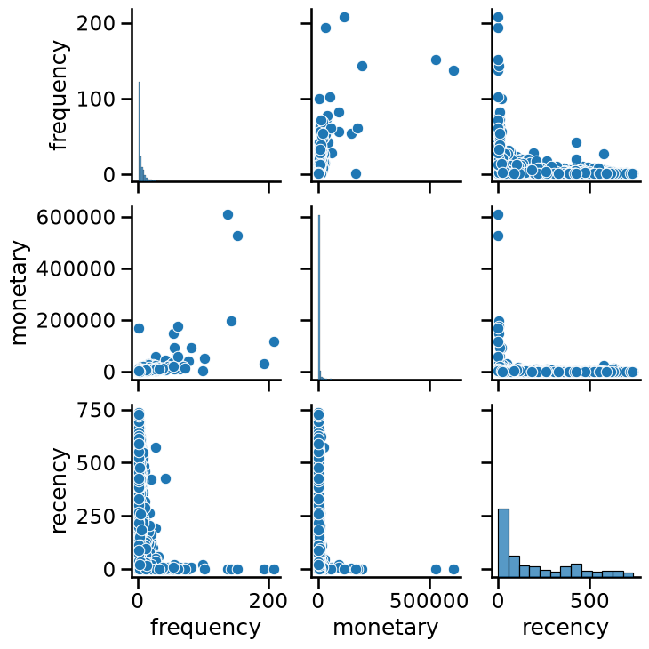
As k-means clustering relies on computing distances between samples, in general we need to scale our data before training the clustering model.
Modify the color of the pairplot to represent the cluster labels as
predicted by KMeans without any scaling. Try different values for
n_clusters, for instance, n_clusters_values=[2, 3, 4]. Do all features
contribute equally to forming the clusters in their original scale?
# solution
from sklearn.cluster import KMeans
n_clusters_values = [2, 3, 4]
for n_clusters in n_clusters_values:
model = KMeans(n_clusters=n_clusters)
clustered_data = data.copy()
clustered_data["cluster label"] = model.fit_predict(data)
grid = sns.pairplot(clustered_data, hue="cluster label", palette="tab10")
grid.figure.suptitle(f"n_clusters={n_clusters}", y=1.08)
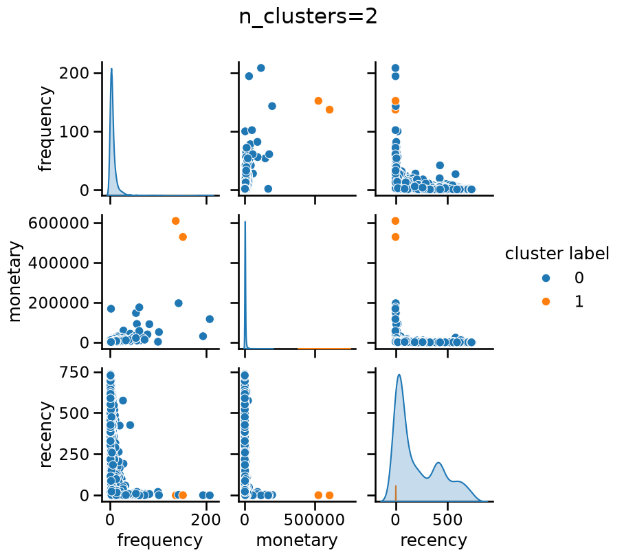
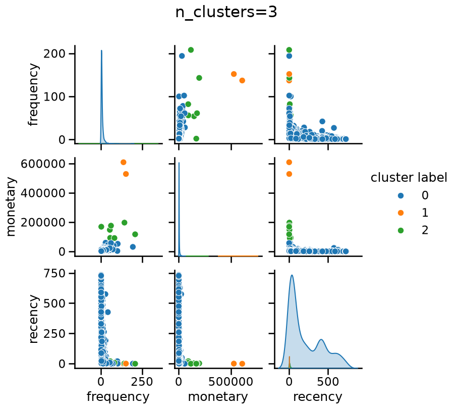
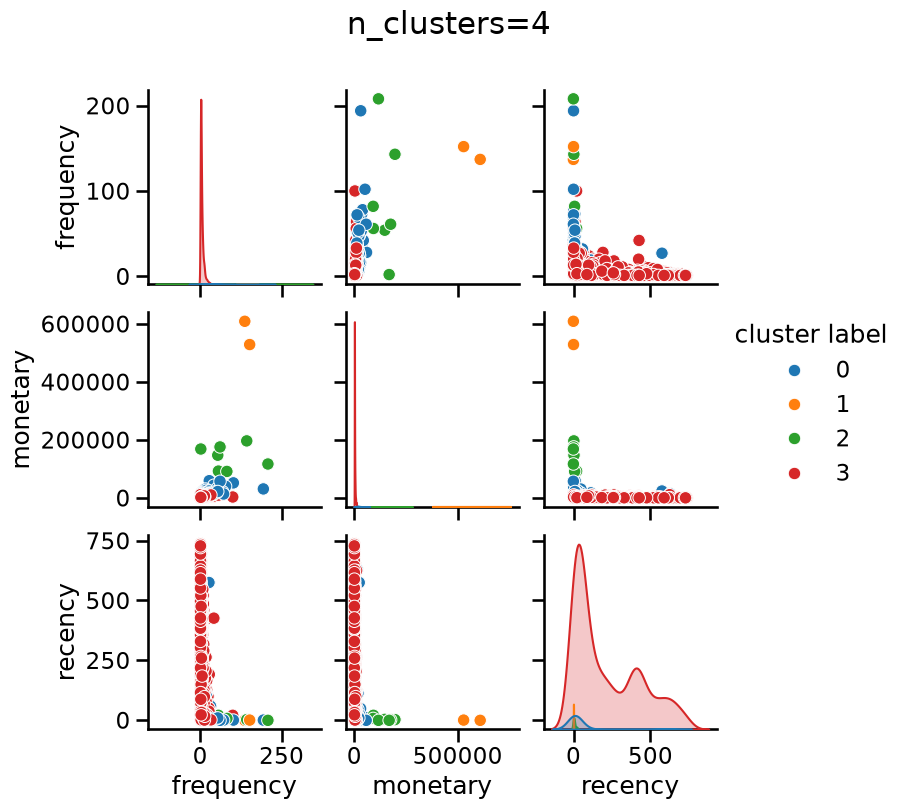
Without scaling “monetary” has a dominant impact when forming clusters, regardless of the number of clusters.
Create a pipeline composed by a StandardScaler followed by a KMeans step
as the final predictor. Set the random_state of KMeans for
reproducibility. Then, make a plot of the WCSS or inertia for n_clusters
varying from 1 to 10. You can use the following helper function for such
purpose:
import matplotlib.pyplot as plt
from sklearn.metrics import silhouette_score
def plot_n_clusters_scores(
model,
data,
score_type="inertia",
n_clusters_values=None,
alpha=1.0,
title=None,
):
"""
Plots clustering scores (inertia or silhouette) for a range of n_clusters.
Parameters:
model: A pipeline whose last step has a `n_clusters` hyperparameter.
data: The input data to cluster.
score_type: "inertia" or "silhouette" to decide which score to compute.
alpha: Transparency of the plot line, useful when several plots overlap.
title: Optional title to set; default title used if None.
"""
scores = []
if n_clusters_values is None:
if score_type == "inertia":
n_clusters_values = range(1, 11)
else:
n_clusters_values = range(2, 11)
for n_clusters in n_clusters_values:
model[-1].set_params(n_clusters=n_clusters)
if score_type == "inertia":
ylabel = "WCSS (inertia)"
model.fit(data)
scores.append(model[-1].inertia_)
elif score_type == "silhouette":
ylabel = "Silhouette score"
cluster_labels = model.fit_predict(data)
data_transformed = model[:-1].transform(data)
score = silhouette_score(data_transformed, cluster_labels)
scores.append(score)
else:
raise ValueError(
"score_type must be either 'inertia' or 'silhouette'"
)
plt.plot(n_clusters_values, scores, color="tab:blue", alpha=alpha)
plt.xlabel("Number of clusters (n_clusters)")
plt.ylabel(ylabel)
_ = plt.title(title or f"{ylabel} for varying n_clusters", y=1.01)
# solution
from sklearn.pipeline import make_pipeline
from sklearn.preprocessing import StandardScaler
model = make_pipeline(StandardScaler(), KMeans())
model
Pipeline(steps=[('standardscaler', StandardScaler()), ('kmeans', KMeans())])In a Jupyter environment, please rerun this cell to show the HTML representation or trust the notebook. On GitHub, the HTML representation is unable to render, please try loading this page with nbviewer.org.
Parameters
Parameters
Parameters
# solution
plot_n_clusters_scores(model, data, score_type="inertia")
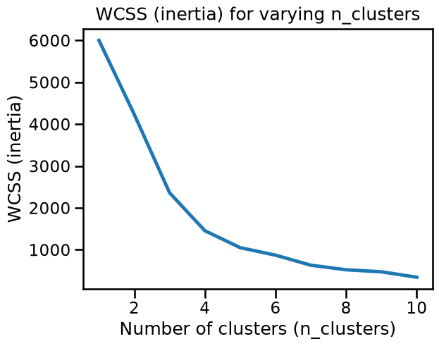
The WCSS plot may or may not present a well-defined elbow, depending of the random initialization of the centroids in k-means.
Let’s see if we can find one or more stable candidates for n_clusters using
the elbow method when resampling the dataset. For such purpose:
Generate randomly resampled data consisting of 50% of the data by using
train_test_splitwithtrain_size=0.5. Changing therandom_stateto do the split leads to different samples.Use the
plot_n_clusters_scoresfunction inside aforloop to make multiple overlapping plots of the inertia, each time using a different resampling. 10 resampling iterations should be enough to draw conclusions.You can choose to set the
random_statevalue of theKMeansstep, but be aware that even if we fixrandom_state=0in all resampling iterations, k-means will still choose different initial centroids for different data samples, so fixing it or not should not change the conclusions w.r.t. to stability to resampling.
Is the elbow (optimal number of clusters) stable when resampling?
# solution
from sklearn.model_selection import train_test_split
for random_state in range(1, 11):
data_subsample, _ = train_test_split(
data, train_size=0.5, random_state=random_state
)
plot_n_clusters_scores(
model,
data_subsample,
score_type="inertia",
alpha=0.2,
title="Stability of inertia across resamplings",
)
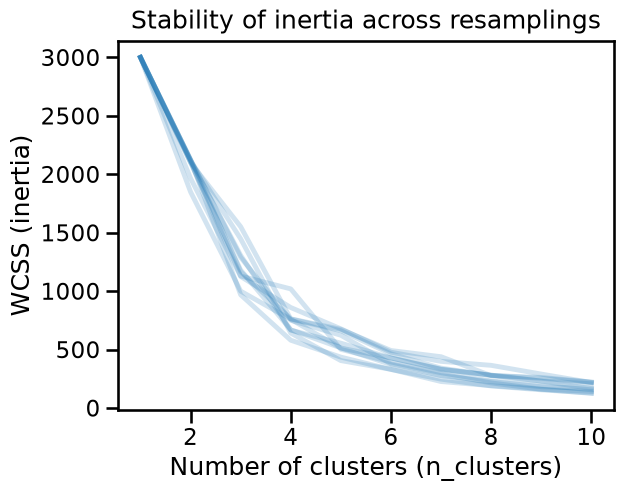
The inertia changes drastically as a function of the subsamples, it is then not possible to systematically define an optimal number of clusters.
By default, KMeans uses a smart selection of the initial centroids called
“k-means++”. Instead of picking points completely at random, it tries several
candidate centroids at each step and picks the best ones based on an
estimation of how much they would help reduce the overall inertia. This method
improves the chances of finding better cluster centroids and speeds up
convergence compared to random initialization.
Because “k-means++” already does a good job of finding suitable centroids, a
single initialization is typically sufficient for most cases. That is why the
parameter n_init in scikit-learn (which controls the number of times the
algorithm is run with different centroid initializations) is set to 1 by
default when init="k-means++". Nevertheless, there may be cases (as when
data is unevenly distributed) where increasing n_init may help ensuring a
global minimal inertia.
Repeat the previous example but setting n_init=5. Remember to fix the
random_state for the KMeans initialization to only estimate the
variability related to the resampling of the data. Are the resulting inertia
curves more stable?
# solution
model = make_pipeline(StandardScaler(), KMeans(n_init=5, random_state=0))
model
Pipeline(steps=[('standardscaler', StandardScaler()),
('kmeans', KMeans(n_init=5, random_state=0))])In a Jupyter environment, please rerun this cell to show the HTML representation or trust the notebook. On GitHub, the HTML representation is unable to render, please try loading this page with nbviewer.org.
Parameters
Parameters
Parameters
# solution
for random_state in range(1, 11):
data_subsample, _ = train_test_split(
data, train_size=0.5, random_state=random_state
)
plot_n_clusters_scores(
model,
data_subsample,
score_type="inertia",
alpha=0.2,
title="Stability of inertia with\nn_init=5 and StandardScaler",
)
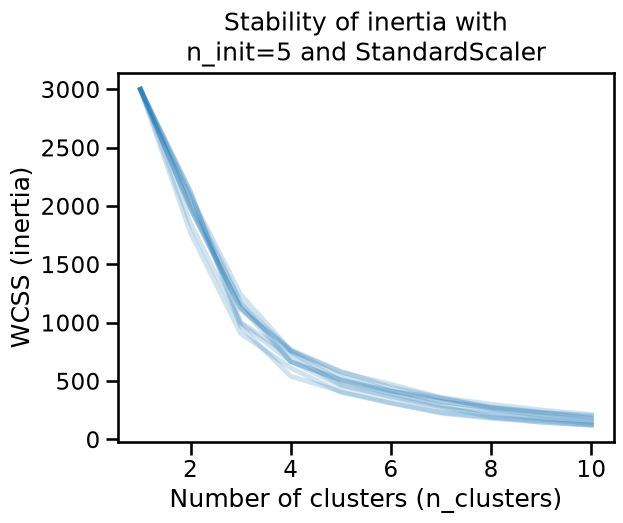
The inertia is now stable, but an elbow is not clearly defined and then it is not possible to define an optimal number of clusters from this heuristics.
Repeat the experiment, but this time determine if the optimal number of
clusters (with StandarScaler and n_init=5) is stable across subsamplings
in terms of the silhouette_score. Be aware that computing the silhouette
score is more computationally costly than computing the inertia.
# solution
for random_state in range(1, 11):
data_subsample, _ = train_test_split(
data, train_size=0.5, random_state=random_state
)
plot_n_clusters_scores(
model,
data_subsample,
score_type="silhouette",
alpha=0.2,
title=(
"Stability of silhouette score\nwith n_init=5 and StandardScaler"
),
)
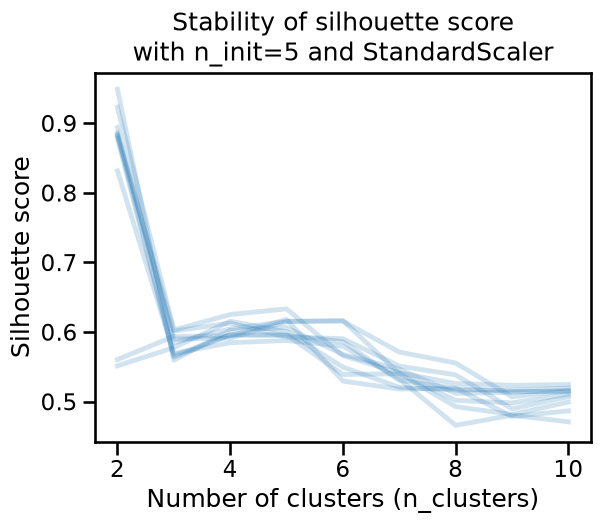
The silhouette score also varies as a function of the resampling, even after
setting n_init=5. It may seem that the optimal number of clusters is
sometimes 2, 4, 5 or 6 depending on the sampling. We can conclude that in this
case, what makes challenging to find the optimal number of clusters is not
related to the metric, but possibly to the data itself, or to the modeling
pipeline.
Once again repeat the experiment to determine the stability of the optimal
number of clusters. This time, instead of using a StandardScaler, use a
QuantileTransformer with default parameters as the preprocessing step in
the pipeline. Contrary to StandardScaler, QuantileTransformer is a
nonlinear transformation that maps the features with a long tail
distributions to a uniform distribution, which is the case for the
“frequency” and “monetary” features in the RFM dataset.
For the KMeans step, keep n_init=5.
What happens in terms of silhouette score? Does this make it possible to identify stable and qualitatively interesting clusters in this data?
# solution
from sklearn.preprocessing import QuantileTransformer
model = make_pipeline(QuantileTransformer(), KMeans(n_init=5, random_state=0))
for random_state in range(1, 11):
data_subsample, _ = train_test_split(
data, train_size=0.5, random_state=random_state
)
plot_n_clusters_scores(
model,
data_subsample,
score_type="silhouette",
alpha=0.2,
title=(
"Stability of silhouette score\nwith n_init=5 and"
" QuantileTransformer"
),
)
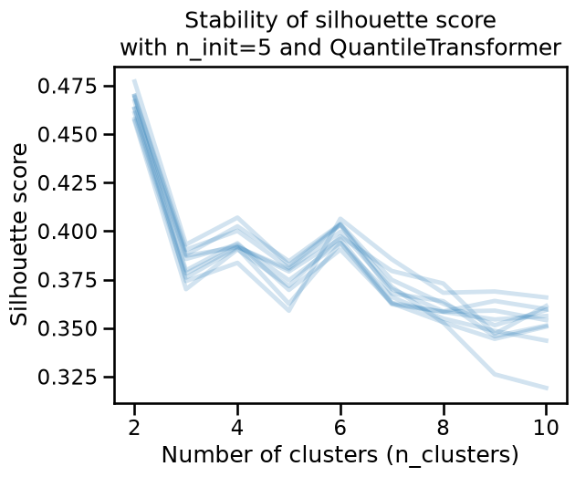
The silhouette score is a bit more stable under resampling. Moreover, the optimal number of clusters seems to be 2, as it provides the highest score. However 4 or 6 clusters may still make sense if the clustering has specific use cases or domain relevance.
Notice that you should still be cautious as the relatively low values of the
silhouette scores suggest that clusters are not well separated or not dense
enough. To verify this, we can plot the labels when setting n_clusters=6.
n_clusters = 6
model = make_pipeline(
QuantileTransformer(),
KMeans(n_init=5, n_clusters=n_clusters, random_state=0),
).set_output(transform="pandas")
model
Pipeline(steps=[('quantiletransformer', QuantileTransformer()),
('kmeans', KMeans(n_clusters=6, n_init=5, random_state=0))])In a Jupyter environment, please rerun this cell to show the HTML representation or trust the notebook. On GitHub, the HTML representation is unable to render, please try loading this page with nbviewer.org.
Parameters
Parameters
Parameters
cluster_labels = model.fit_predict(data)
_ = sns.pairplot(
model[:-1].transform(data).assign(cluster_labels=cluster_labels),
hue="cluster_labels",
palette="tab10",
)
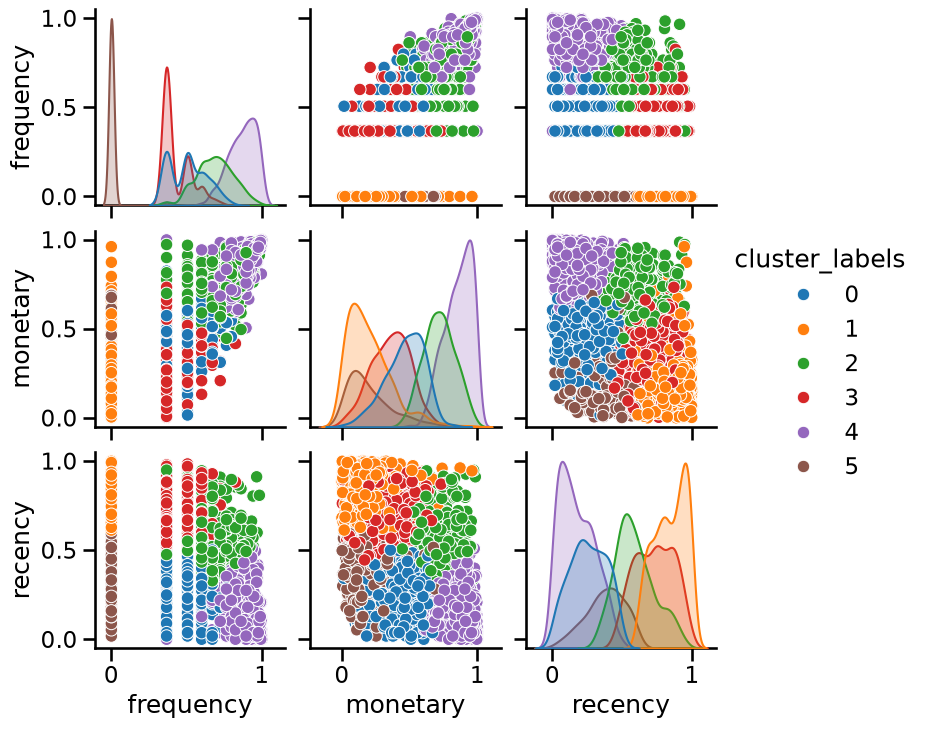
Since we have 3 dimensions, we can try to visualize the cluster labels using a 3D projection directly:
from matplotlib.colors import ListedColormap
fig, ax = plt.subplots(figsize=(8, 8), subplot_kw={"projection": "3d"})
ax.view_init(azim=80)
cmap = ListedColormap(plt.get_cmap("tab10").colors[:n_clusters])
scatter = ax.scatter(
*model[:-1].transform(data).values.T,
c=cluster_labels,
cmap=cmap,
s=50,
alpha=0.7,
)
ax.set_box_aspect(None, zoom=0.84)
ax.set_xlabel(f"Transformed {data.columns[0]}", labelpad=15)
ax.set_ylabel(f"Transformed {data.columns[1]}", labelpad=15)
ax.set_zlabel(f"Transformed {data.columns[2]}", labelpad=15)
ax.set_title("Clusters in quantile-transformed space", y=0.99)
_ = plt.tight_layout()
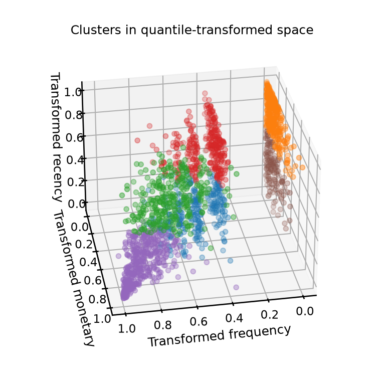
The general impression from this study is that k-means fails to find well-separated clusters in this dataset regardless of the preprocessing method used.
We can observe that the quantile-transformed data has a structure of layered planes because of the discrete integer levels for the lowest values of the “Frequency” feature which are overrepresented in the dataset.
One could try more advanced kinds of preprocessing, or even, clustering algorithms that favor different kinds of shapes, however, by looking at the pairplot above we can draw the following conclusions:
The discrete layers visible for the lowest values of the “frequency” feature are not that interesting to treat as clusters by themselves because they do not relate to visible structure involving the other two features;
If we ignore the “frequency” feature, we can observe no significant cluster structure in the “recency” and “monetary” 2D space.
In conclusion, the data does not have a clear cluster structure, and this explains why we could not find strong and stable values for the silhouette score under resampling.